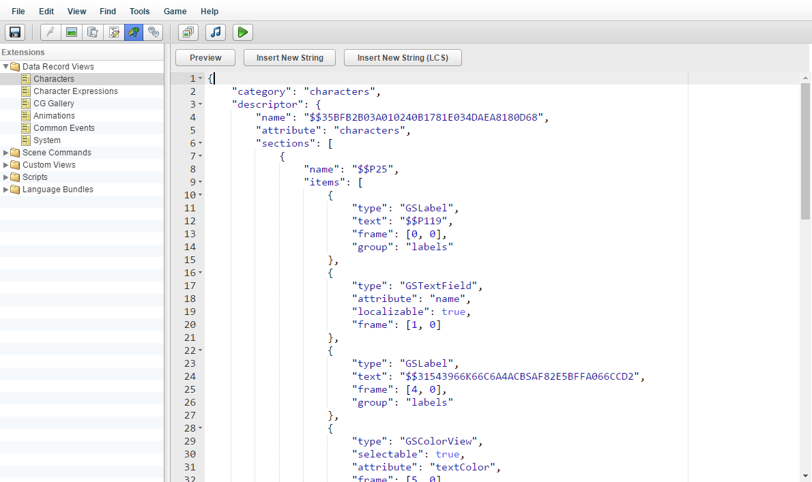

场景
以与调用场景

命令相同的方式调用场景。
绑定
值
在事件被触发后，将一个数字值放入指定的数字变量，并跳转到指定的标签。到
是要放入
数字变量中的数字值。跳转
到标签指定
要跳转到的标签。
绑定
到开关将事件的状态存储在开关中。
进入时
- 如果鼠标进入热点区域，则将开关设置为 ON。选中时
- 如果热点被选中，
则将开关设置为 ON。
取消选择时
- 如果热点被取消选择，
则将开关设置为 OFF。
离开时
- 如果鼠标离开热点区域，
则将开关设置为 OFF。
更改
热点状态
更改热点的状态。数字
- 您要操作的热点的索引（ID）。
选中
- 切换热点的
“选中”状态为开/关。
启用- 启用或禁用热点。
擦除热点
从屏幕上擦除热点。
- 您要操作的图片的索引（ID）。
默认值
出现
是显示动画的持续时间（以毫秒为单位）。
持续时间